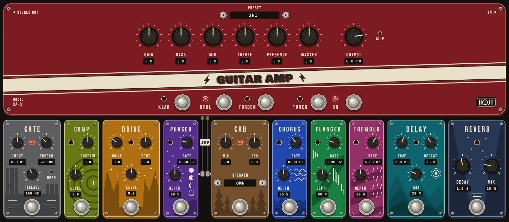
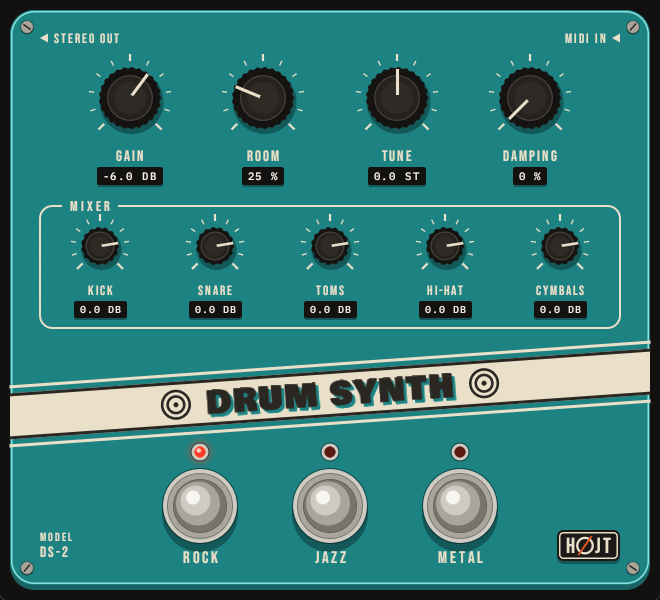
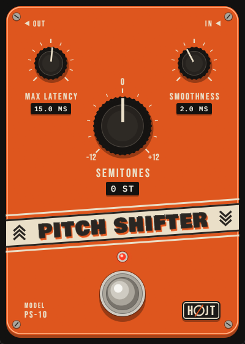

Guitar Amp
GA-3 / Effect / mono or stereo in, stereo out

What it is
A whole guitar rig in one window: three amps, each with its own cabinet, and ten pedals around them. Plug a guitar straight into the audio interface and play.
- Klar is clean and glassy, Brøl a mid-forward crunch, Torden a tight modern high gain. Each remembers its own six dials
- Gate, compressor, overdrive, phaser, chorus, flanger, tremolo, cabinet, delay and reverb. Drag a pedal by its name to move it in the chain
- Play through your own cabinet impulse responses: drop WAV files in
Documents/Hojt Audio/Cabinets - Seventeen presets and a tuner on the head
- 0.1 to 0.3 ms of latency, so it can be played live
Everything is our own design. It does not copy any real amp or pedal.
Download
The macOS and Linux builds have not been tried in a DAW yet. How to install
Listen
- Guitar, straight in
- Klar, clean
- Brøl, crunch
- Torden, high gain
- Torden, lead with delay
- Preset Tåge: clean, long delay and reverb
The guitar in these clips is made by a program, not played, so the amp is all you hear change.
Controls
| Control | Range | What it does |
|---|---|---|
| On | on / off | Bypasses the whole rig, without a click |
| Tuner | on / off | Silent tuning, 48 Hz to 1420 Hz against A = 440 Hz |
| Input | -24 to +24 dB | Brings the guitar to the level the amps expect |
| Amp | Klar / Brøl / Torden | The amp and its cabinet |
| Gain, Bass, Mid, Treble, Presence, Master | 0.0 to 10.0 | The amp's six dials |
| Output | -30 to +6 dB | Output level. A lamp shows when it clips |
| Gate: Threshold, Release | -80 to -20 dB, 20 to 500 ms | Noise gate on the input. A lamp shows when it is open |
| Comp: Sustain, Level | 0.0 to 10.0 | Compressor. Level 5 is as loud as the pedal off |
| Drive: Gain, Tone, Level | 0.0 to 10.0 | Overdrive in front of the amp |
| Phaser, Chorus, Flanger, Tremolo: Rate, Depth | 0.05 to 12 Hz, 0 to 100 % | Modulation, in front of the amp or behind the cabinet |
| Cab: Mic, Resonance | 0.0 to 10.0 | Darker to brighter microphone position; less or more low thump. Steps through your own cabinet files |
| Delay: Time, Feedback, Mix | 20 to 1000 ms, 0 to 90 %, 0 to 100 % | Stereo delay |
| Reverb: Decay, Mix | 0.3 to 6.0 s, 0 to 100 % | Stereo reverb |
Drum Synth
DS-2 / Instrument / MIDI in, stereo out

What it is
A full drum kit with no samples. Every hit is made in the plugin as it is played, so there is nothing to install or to go missing, and no two hits are quite the same.
- Three kits: Rock, Jazz and Metal, each with its own room
- Kick, snare, side stick, six toms, hi-hat, two crashes, ride and bell, china, splash
- General MIDI drum map: works with any drum pattern or e-kit
- Playing harder changes the sound, not only the level
Listen
- Rock kit
- Jazz kit
- Metal kit
Download
The macOS and Linux builds have not been tried in a DAW yet. How to install
Controls and MIDI notes
| Control | Range | What it does |
|---|---|---|
| Kit | Rock / Jazz / Metal | The sound of every piece and of the room |
| Gain | -30 to +6 dB | Output level |
| Room | 0 to 100 % | Amount of room reverb |
| Tune | -6 to +6 st | Pitch of kick, snare and toms |
| Damping | 0 to 100 % | Shortens the ring of drums and cymbals |
| Kick, Snare, Toms, Hi-Hat, Cymbals | -30 to +6 dB | Level of each group |
| MIDI note | Plays | MIDI note | Plays |
|---|---|---|---|
| 35, 36 | Kick | 42 / 44 / 46 | Hi-hat closed / pedal / open |
| 38, 40 | Snare | 49, 57 | Crash 1, Crash 2 |
| 37 | Side stick | 51, 59 / 53 | Ride / Ride bell |
| 41, 43, 45, 47, 48, 50 | Toms, low to high | 52, 55 | China, Splash |
Pitch Shifter
PS-10 / Effect / in, out

What it is
Tune the guitar down without touching the pegs, or up like a capo. It shifts by up to an octave either way and is made to be played through live.
- -12 to +12 semitones
- The delay follows the note you play: about 12 ms on the low E string, under 3 ms high up the neck
- At 0 semitones the signal passes through untouched, to the bit
- Single notes are cleanest. For chords, turn Max Latency up to 25 or 30 ms
Listen
- Notes, as played
- Notes, 2 semitones down
- Notes, 7 semitones up
- Chords, as played
- Chords, 2 semitones down
Download
The macOS and Linux builds have not been tried in a DAW yet. How to install
Controls
| Control | Range | What it does |
|---|---|---|
| Semitones | -12 to +12 | How far to shift |
| Max Latency | 2 to 50 ms | The longest the delay may get. Low E needs 12 ms, chords are cleaner at 25 to 30 ms |
| Smoothness | 0.5 to 10 ms | Length of the crossfade where the sound is joined |
| Bypass | on / off | The footswitch. Switches without a click |
Install
- Download the zip for your system and unpack it.
- Copy one of the two plugin files to its folder below:
.vst3for most DAWs (Reaper, Ableton Live, Cubase, FL Studio, Studio One), or.clapwhere the DAW supports it (Reaper, Bitwig, FL Studio, Studio One). Create the folder if it is not there. - Let the DAW scan for plugins. They are listed under Hojt Audio.
| System | VST3 | CLAP |
|---|---|---|
| Windows | C:\Program Files\Common Files\VST3 | C:\Program Files\Common Files\CLAP |
| macOS | ~/Library/Audio/Plug-Ins/VST3 | ~/Library/Audio/Plug-Ins/CLAP |
| Linux | ~/.vst3 | ~/.clap |
macOS: one more step
macOS stops plugins that were downloaded and do not come from a registered developer. After copying, open Terminal and run this once for each plugin you installed, with the name of the file you copied:
xattr -dr com.apple.quarantine ~/Library/Audio/Plug-Ins/VST3/HojtGuitarAmp.vst3
Updating
Copy the new file over the old one. Projects that use the plugin open with their settings as they were.
Something wrong?
Tell us which plugin, system and DAW in an issue on GitHub. The macOS and Linux builds come straight from the build server and have not been tried in a DAW yet, so reports from there are especially welcome.